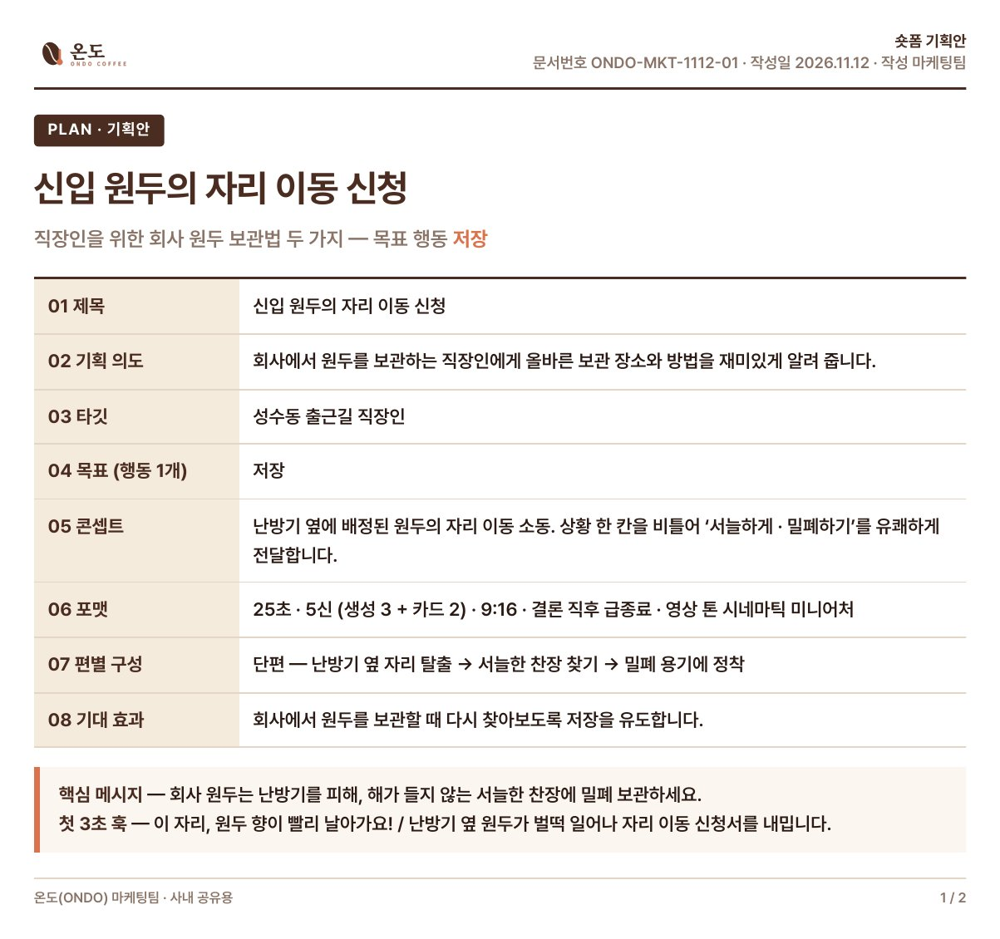
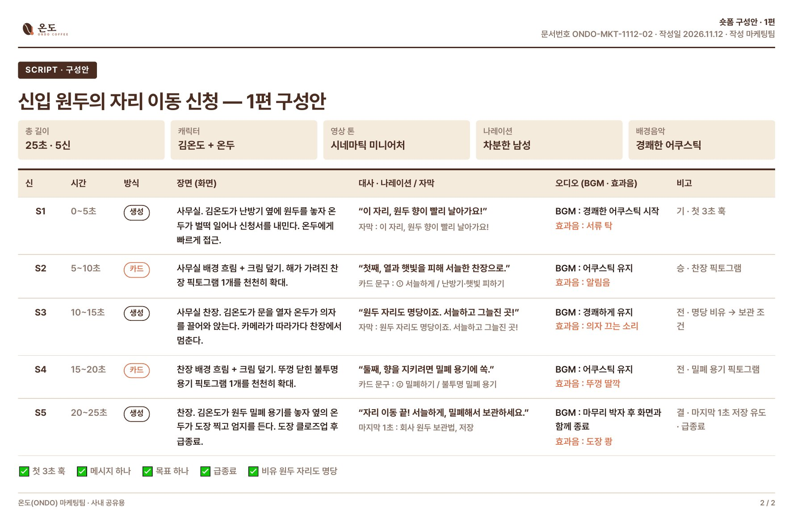

2회차 복습 · 봇 다시 해보기
오늘 배운 기획안 · 구성안을 정리하고, 수업에서 쓴 봇 두 개를 직접 내려받아 혼자 다시 돌려 볼 수 있게 모았습니다.
📄2회차 교안 받기PDF 파일 · 42장받기 ↓받기를 누르시고 우상단을 보시면
☝ 다운로드 버튼은 여기에!!
💬
막히면 캡처해서 단톡방에 올려 주세요안 되는 부분은 화면을 캡처해서 짧은 설명과 함께 단톡방에 올려 주세요. 살펴보고 답장드릴게요~
PART 1오늘 수업 복습
기획안은 존재의 이유, 구성안은 생김새와 연출법
01오늘의 핵심 3가지
① 기획안 = 존재의 이유 · 구성안 = 생김새와 연출법
- 기획안은 “왜 · 누구에게 · 무엇을”에 답합니다.
- 구성안은 “몇 초에 무엇을 보여 주고 말할까”에 답합니다.
② 봇 = 지침(AGENTS.md) + KB
- 틀은 고정하고, 답만 바꿉니다. 번호로 답하면 같은 품질이 나옵니다.
③ 봇 폴더 하나에 — 두뇌는 위에, 결과물은 아래에
- 바탕화면에 봇 폴더 하나, 챗GPT 프로젝트에 그 폴더 하나만 연결합니다.
02기획안 vs 구성안
| 구분 | 기획안 | 구성안 |
|---|---|---|
| 한 줄 정의 | 이 영상(프로그램)의 존재의 이유 | 한 편의 생김새와 연출법 |
| 답하는 질문 | 왜 · 누구에게 · 무엇을 | 몇 초에 무엇을 보여 주고 말할까 |
| 들어가는 것 | 8항목 (아래 표) | 시간 · 화면 · 자막 · 대사 · 효과 (5칸) |
| 몇 장? | 프로그램당 1장 | 편마다 1장 |
기획안의 생김새 — 8항목
| 항목 | 쓰는 내용 |
|---|---|
| 01 제목 | 시리즈 이름 |
| 02 기획 의도 | 왜 만드는지 1~2줄 |
| 03 타깃 | 누가 보는지 구체적으로 |
| 04 목표 | 영상을 보고 할 행동 1개 |
| 05 콘셉트 | 시리즈의 차별점 한 줄 |
| 06 포맷 | 길이 · 편수 · 고정 오프닝/엔딩 |
| 07 편별 구성 | 편 제목 · 핵심 메시지 → 구성안으로 이어짐 |
| 08 기대 효과 | 이 시리즈로 얻을 결과 |
실제 기획안의 생김새 (누르면 크게)

단편 기획 vs 장편 기획
| 구분 | 단편 | 장편 |
|---|---|---|
| 주로 | 홍보영상 · 행사 · 캠페인 | 유튜브 · 인스타 숏폼 시리즈 |
| 핵심 | 한 편 안에 메시지 하나를 강하게 | 채널 정체성 · 고정 캐릭터 · 포맷 · 업로드 주기 |
| 문서 | 기획안 1장 + 구성안 1장 | 기획안 1장 + 구성안은 편마다 |
03구성안 — 25초 · 5신
S1 생성훅
S2 HTML정보 카드
S3 생성전개
S4 HTML핵심 카드
S5 생성결론·급종료
생성은 크레딧이 드는 꼭 필요한 장면 3개에만, 정보는 HTML 카드로 또렷하게. 마지막에 FFmpeg가 자막 · 로고 · 소리를 붙여 조립합니다.
구성안의 생김새 — 1편 예시 (구두계약)
| 신 | 방식 | 화면 | 자막·대사 | 효과음·BGM |
|---|---|---|---|---|
| S1 | 생성 | 악수하다 "계약서는 없잖아" 하며 손을 뺌 | 계약서 없으면 그냥 없던 일? | 악수 "짝" · BGM 시작 |
| S2 | HTML | S1 마지막 장면 흐림 + 큰 X | 땡, 틀렸습니다 | 오답 버저 |
| S3 | 생성 | 김법무가 법전을 펼쳐 짚음 | 말로 한 약속도 엄연한 계약입니다 | 책장 "촤르륵" |
| S4 | HTML | 키워드 카드 | 문자 · 녹음 = 증거 — 남겨 두세요 | 알림음 "띵" |
| S5 | 생성 | 문자 화면 보여 주며 엄지척 → 컷 | 약속은 남겨야 지켜집니다 (급종료) | "딱" · BGM 하드컷 |
실제 구성안의 생김새 (누르면 크게)

예시 : 가상의 커피 회사 「온도」 마케팅팀이 만든 단편 숏폼 — 기획안 1장 + 구성안 1편
043문제로 확인하기
Q1‘이 영상이 왜 있어야 하는가’에 답하는 문서는?
Q2구성안에 들어가는 5가지 칸이 아닌 것은?
Q325초 5신에서 S2 · S4 카드는 무엇으로 만들까요?
PART 2(법무부) 기획구성안봇 — 직접 다시 해보기
번호로 답하면 기획안 + 구성안(1편)을 PDF 한 파일로 만들어 줍니다
05폴더 받기
📦(법무부) 기획구성안봇 폴더 받기ZIP · 2.4MB · 압축을 풀어 바탕화면에 두세요받기 ↓바탕화면/(법무부) 기획구성안봇/
├ AGENTS.md ← 봇의 지침 (질문 13개 · 진행 순서)
├ KB/ ← 기획원칙 · 구성안기준 · 샘플 · 캐릭터성격
├ 캐릭터/ ← 김 · 박 · 서 · 최법무 시트
├ 샘플/ ← 좋은 숏폼 캡처 + 메모
└ 결과물/ ← 봇이 만든 것이 모두 여기에
🔒 이 폴더에는 개인정보 · 내부 문서를 넣지 마세요. 연습용 파일만 넣습니다.
06봇 만들기 — 6단계
1️⃣
챗GPT 데스크톱 앱 → 위쪽 Work 탭웹 브라우저가 아니라 PC에 설치한 앱이어야 폴더를 연결할 수 있습니다.
2️⃣
왼쪽 프로젝트 옆 ＋ → 새 프로젝트
3️⃣
이름 : (법무부) 기획구성 봇(기관) + 하는 일 + 봇 순서로 지으면 봇이 늘어나도 찾기 쉽습니다.
4️⃣
소스 폴더 추가 → 이 컴퓨터 → 바탕화면 → (법무부) 기획구성안봇 → 폴더 선택폴더 그대로 골라 선택하면 됩니다. 안에 같은 이름 폴더가 또 있으면 AGENTS.md가 보이는 안쪽 폴더를 연결하세요.
5️⃣
“이 폴더를 신뢰할까요?” → 폴더 신뢰
6️⃣
새 채팅에 “시작”봇이 질문 1을 보여 주면 성공입니다.
07이렇게 답하세요
1
번호로 답하기선택지 번호만 입력하면 됩니다.
0
모르겠으면 0봇이 추천해 줍니다.
✏️
원하는 게 따로 있으면 직접 적기원하는 스타일이나 스토리라인도 써 주세요.
질문 13개 미리 보기
| 블록 | 질문 | 나오는 것 |
|---|---|---|
| A. 왜 | ① 누가 볼까 ② 보고 할 행동 하나 ③ 주제 분야 ④ 주제 고르기 | 기획 의도 · 타깃 · 목표 |
| B. 무엇을 | ⑤ 단편/시리즈 ⑥ 전개 방식 ⑦ 느낌 ⑧ 원하는 스타일·스토리라인 ⑨ 첫 3초 훅 | 기획안 8항목 |
| C. 어떻게 | ⑩ 캐릭터 ⑪ 그림체 ⑫ 나레이션 목소리 ⑬ 배경음악 | 구성안 1편 + 생성 프롬프트 |
08캐릭터 4인 — 성격까지 정해 두기
| 캐릭터 | 성격 | 말투 | 잘 맞는 주제 |
|---|---|---|---|
| 김법무 25 · 신입 | 호기심 많고 리액션 큰 열정 막내 | "어? 이거 저도 몰랐어요!" | 생활 법률 Q&A · 유쾌 |
| 박법무 27 · 2년차 | 차분하고 다정한 공감형 상담가 | "괜찮아요, 이렇게 하시면 돼요." | 피해자 · 취약계층 지원 · 따뜻 |
| 서법무 40 · 아저씨 | 비유와 아재개그의 유쾌한 아재 | "라떼는 말이야~ 근데 요즘은?" | 사기 · 보이스피싱 예방 · 유쾌 |
| 최법무 40 · 팀장 | 결론부터 말하는 원칙주의자 | "핵심만 말씀드리면, 두 가지입니다." | 법 개정 · 제도 변경 · 진지 |
둘이 나와도 좋아요 — 김 + 최(신입이 묻고 팀장이 정리) · 서 + 박(아재개그 판을 차분하게 수습)


09결과는 봇 폴더의 ‘결과물’ 안에
바탕화면/(법무부) 기획구성안봇/결과물/
└ 숏폼_주제_월일/
├ 기획구성안_주제.pdf ← 기획안 → 구성안(1편) 한 파일
├ 01_기획안.md
├ 02_구성안.md
├ 03_생성프롬프트.md
└ 04_작업기획.md
마지막 화면의 링크를 누르면 PDF와 폴더가 바로 열립니다. PDF는 단톡방에 올려 주세요.
10한 단계 더 — KB에 ‘대가의 뇌’ 넣기
1️⃣
닮고 싶은 PD · 크리에이터 고르고 자료 모으기영상 · 글 · 인터뷰
2️⃣
아래 프롬프트와 자료를 챗GPT에 넣기대가-기획원칙.md로 정리해 줍니다
3️⃣
(법무부) 기획구성안봇 › KB 폴더에 넣고 새 채팅봇이 함께 읽고 우선 따릅니다
📋 대가의 원칙 뽑는 프롬프트
첨부한 자료는 [대가 이름]의 숏폼 기획 노하우야. 이 자료에서 기획 원칙만 뽑아 MD 파일로 정리해줘. 원문 문장은 그대로 베끼지 말고, 쉬운 말로 요약해줘. [정리 항목] 1. 훅 설계 원칙 2. 구성(기승전결) 원칙 3. 엔딩 원칙 4. 자막·말투 원칙 5. 하지 말아야 할 것 [출력 형식] - 제목은 #, 항목은 ##, 내용은 - 글머리 기호 - 항목마다 3~5줄 - 파일 이름: 대가-기획원칙.md
11안 될 때
| 증상 | 이렇게 해 보세요 |
|---|---|
| “시작”에 일반 대화처럼 답함 | 폴더 연결 확인 → 새 채팅에서 다시 “시작” |
| 폴더 이름 · 위치를 바꾼 뒤 안 됨 | 프로젝트 소스 폴더를 바뀐 폴더로 다시 연결 |
| Work 탭이나 폴더 연결이 안 됨 | 일반 프로젝트에 AGENTS.md와 KB 파일을 올리고, 아래 지침을 지침 칸에 붙여넣기 |
| KB를 넣었는데 반영이 안 됨 | 진행 중인 채팅에는 안 들어갑니다 → 새 채팅 |
📋 일반 프로젝트용 지침 (대신 만들 때)
너는 '숏폼 기획구성안 봇'이야. 연결된 폴더(또는 프로젝트 파일)의 AGENTS.md를 가장 먼저 읽고, 그 순서와 규칙을 그대로 따른다. KB 폴더의 .md 파일을 기준으로 삼고, 대화마다 질문은 한 번에 하나, 객관식 번호로 진행한다. AGENTS.md를 찾지 못하면 "(법무부) 기획구성안봇 폴더를 연결하거나 AGENTS.md를 올려 주세요"라고만 말한다.
PART 3(법무부) 간단 숏폼봇 — 직접 만들어 보기
시연에서 본 그 봇 · 상담만 하면 25초 · 720p 숏폼 1편을 끝까지
12시연 결과물 — 법무부 칭찬할 일 셋
| 신 | 만드는 방법 |
|---|---|
| S1 · S3 · S5 | 생성 — 캡컷 웹 (시댄스 2.0 미니) |
| S2 · S4 | HTML 카드 — 픽토그램 + 키워드, 모션 넣어 영상으로 |
| 조립 | FFmpeg — 말 자막 · 법무부 로고 · 나레이션 · 배경음악 |


13준비 — 계정 · 로그인
| 사이트 | 주소 | 용도 | 계정 |
|---|---|---|---|
| 챗GPT 데스크톱 앱 | chatgpt.com/download | 봇 (폴더 연결) | 지급 계정 |
| 캡컷 웹 | capcut.com | 영상 3신 생성 | 유료 (지급 계정) |
| 제미나이 | gemini.google.com | 배경음악 | 구글 계정 |
| 일레븐랩스 | elevenlabs.io | 나레이션 | 무료 |
🔑
챗GPT ‘내부 웹’에서 미리 로그인챗GPT 안에서 열리는 웹은 내 크롬과 로그인이 따로입니다. 처음 한 번은 내부 웹에서 세 사이트에 직접 로그인해 두세요. 비밀번호는 채팅창에 쓰지 않습니다.
14폴더 받기 · 봇 만들기
📦(법무부) 간단숏폼봇 폴더 받기ZIP · 5MB · 압축을 풀어 바탕화면에 두세요받기 ↓바탕화면/(법무부) 간단숏폼봇/
├ AGENTS.md ← 봇의 지침 (상담 → 구성안 → 생성 → 조립)
├ KB/ ← 기획원칙 · 구성안기준 · 디자인(MASSW) · 캡션작성법 · 캐릭터성격
├ 캐릭터/ ← 김 · 박 · 서 · 최법무 시트
├ 로고/ ← 법무부 로고 (흰색 · 컬러)
├ 폰트/ ← Pretendard (자막 · 카드용)
├ 샘플/
└ 결과물/ ← 만든 영상이 여기에 쌓임
1️⃣
챗GPT 데스크톱 앱 → Work 탭 → 새 프로젝트이름 : (법무부) 간단 숏폼 봇
2️⃣
소스 폴더 추가 → 이 컴퓨터 → 바탕화면 → (법무부) 간단숏폼봇 → 폴더 선택 → 폴더 신뢰연결하는 폴더는 이것 하나뿐입니다.
3️⃣
새 채팅에 “시작”기획구성안봇에서 받은 PDF가 있으면 “1 네”를 고르고 올리면 바로 이어서 만듭니다.
15봇이 움직이는 순서
| 단계 | 봇이 하는 일 | 확인 |
|---|---|---|
| 0 | 기획구성안 PDF가 있으면 받아서 바로 구성안으로 | |
| 1 | 주제 · 소재 상담 → 캐릭터 고르기 → 구성안 5신 | ✅ |
| 2 | 챗GPT로 스토리보드 1장 (5칸) | ✅ |
| 3 | 캡컷 웹(시댄스 2.0 미니)에서 S1 · S3 · S5 생성 시작 | ✅ 크레딧 |
| 4 | 생성되는 동안 일레븐랩스 나레이션 · 제미나이 배경음악 | |
| 5 | S2 · S4 HTML 카드 영상 만들기 | |
| 6 | FFmpeg 조립 — 말 자막 · 법무부 로고 · 소리 → 720p 25초 | |
| 7 | 완성 영상 링크 + 캡션글(채팅창에서 바로 복사) |
✅ 표시에서만 확인을 묻고 나머지는 알아서 진행합니다. 크레딧이 드는 캡컷 생성은 반드시 먼저 물어봅니다. 생성 시간은 신마다 몇 분 걸릴 수 있어요.
16안 될 때
| 증상 | 이렇게 해 보세요 |
|---|---|
| “시작”에 일반 대화처럼 답함 | 폴더 연결이 끊긴 것 — 소스 폴더 다시 연결 → 새 채팅 |
| 캡컷 · 제미나이 · 일레븐랩스에서 멈춤 | 챗GPT 내부 웹에서 그 사이트에 직접 로그인한 뒤 “계속” |
| 내려받은 파일을 못 찾음 | 다운로드 폴더의 파일을 채팅창에 바로 올리기 |
| 카드(S2 · S4)가 정지 화면으로 나옴 | HTML 녹화가 안 되는 환경 — 그대로 써도 되고, “카드 모션 다시”라고 요청 |
다음 시간까지
- 기획구성안봇으로 만든 PDF를 단톡방에 올려 주세요.
- 시간이 되면 그 PDF를 간단 숏폼봇에 넣어 25초 영상 1편을 만들어 보세요.
- 막히는 화면은 캡처해서 단톡방으로!